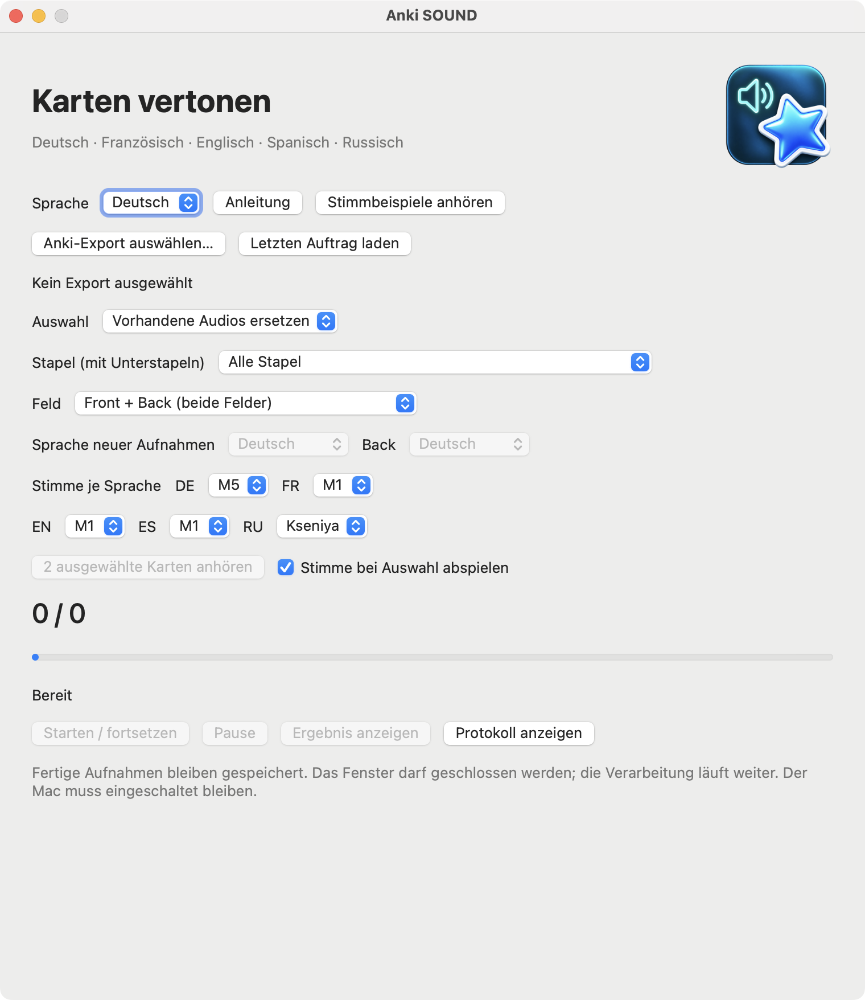

BENUTZERHANDBUCH · VERSION 3.4.10
Anki SOUND
Ein macOS-Werkzeug, das ausgewählte Anki-Karten lokal vertont und einen separat geprüften Export erzeugt. Fortschritt bleibt gespeichert; eine Pause beendet zuerst die laufende Aufnahme.


Projektbeschreibung
Anki SOUND verbindet eine native macOS-Oberfläche mit einer wiederaufnehmbaren lokalen Sprachverarbeitung. Schwerpunkte: explizite Auswahl, Erhalt von Lerndaten, atomare Ausgabedateien, Prüfung des Anki-Paketformats und barrierearm bedienbare Steuerelemente. Die aktuelle Version ist ein lokaler Prototyp; kein Anki-Plugin und keine signierte öffentliche Distribution.
Installation
Voraussetzungen: Mac mit Apple Silicon, macOS 13 oder neuer sowie Python 3.9–3.12. Getestet auf macOS 15.7 / Python 3.9.6. Das Paket enthält Anwendung, Quellcode, Konfiguration und diese Anleitung. Python, Pakete und Stimmen sind NICHT enthalten. Entpacken Sie den gesamten Ordner an einen beschreibbaren Ort. Falls Python fehlt: installieren Sie eine passende Version von python.org. Starten Sie SETUP.command (Internet erforderlich). Danach öffnen Sie previews/Anki SOUND.app. Anwendung und Projektordner müssen zusammenbleiben; bei einem Ordnerwechsel SETUP.command erneut ausführen. Die Anwendung ist lokal signiert, nicht notarisiert. Falls macOS sie blockiert, prüfen Sie Herkunft und Prüfsumme und öffnen Sie sie über Systemeinstellungen → Datenschutz & Sicherheit. Keine globalen Sicherheitseinstellungen abschalten.
So funktioniert es
Export lesen → geeignete Felder auswählen → HTML für die Aussprache bereinigen → Zahlen normalisieren → mit lokalen Stimmen vertonen → WAV vollständig speichern → Export prüfen und bereitstellen. Anki SOUND ändert den Quelltext nur an den ausdrücklich ausgewählten Audioverweisen. Die Quelldatei bleibt unverändert. Deutsch verwendet M5; Französisch, Englisch und Spanisch M1; Russisch Kseniya. Die Oberfläche ist auf Deutsch, Englisch und Russisch verfügbar; die Sprechsprache wird separat gewählt.
Stimmen und Tags
Jede Sprache hat ihre aktuelle Stimme: DE M5, FR M1, EN M1, ES M1 und RU Kseniya. Die Auswahl lässt sich in der jeweiligen Liste ändern und wird im neuen Auftrag gespeichert. Im Modus „Karten mit Tag“ geben Sie je einen Tag-Namen für DE, FR, EN, ES und RU ein. Beispielsweise wählt fr-audio ein französisches Front-Feld, de-audio dagegen ein deutsches Back-Feld in einem französischen Stapel. Tags werden exakt verglichen: soundish ist nicht sound.
Drei Auswahlarten
1. Vorhandene Audios ersetzen: Fügen Sie Audio zuerst auf Ihre bevorzugte Weise in Anki hinzu, z. B. per Aufnahme, Add-on oder Datei. Anki SOUND ersetzt anschließend vorhandene [sound:…]-Verweise. Keine neuen Felder erhalten Audio. Ein Stapelfilter und die Auswahl eines Feldes sind möglich. Erkannte Stapelwurzeln: Deutsch, German, Немецкий, !Немецкий (Front → Deutsch), Französisch, French, Французский (Front → Französisch, Back → Deutsch).
2. Karten mit Tag: Geben Sie je Sprache einen exakten Tag-Namen ein. Die Sprache folgt dem erkannten Stapel und Feld: DE/EN/ES/RU verwenden Front; ein französischer Stapel verwendet FR für Front und DE für Back. Unmarkierte Notizen bleiben unverändert. Stapel und Feld können zusätzlich eingeschränkt werden.
3. Ausgewählter Stapel: Wählen Sie den Stapel direkt aus der gelesenen Liste. Unterstapel werden eingeschlossen. Ein Tag ist nicht erforderlich. Nur die gewählten Felder werden vertont.
Felder: Die Liste enthält die tatsächlichen Feldnamen des Exports. Front + Back verarbeitet beide entsprechend benannten Felder; die Sprachen werden getrennt festgelegt. Ein Feld ist nicht zwingend die sichtbare Kartenseite: umgekehrte Vorlagen können Felder anders anzeigen. Notizen in mehreren, teils außerhalb des ausgewählten Stapels liegenden Stapeln werden ausgeschlossen. Benutzernamen von Stapeln und Feldern werden nie übersetzt. Farbige Kartenfahnen werden nicht verwendet.
Arbeitsablauf
Erstellen Sie in Anki einen aktuellen Export im neuen Format, möglichst einschließlich Medien und Lernfortschritt. Wählen Sie die Datei, den Auswahlmodus und gegebenenfalls Stapel, Feld und Sprache. Starten Sie die Verarbeitung. Die Pause wirkt nach der aktuellen Aufnahme. Öffnen Sie nach Abschluss „Ergebnis anzeigen“. Bewahren Sie vor dem Import eine aktuelle Sicherung auf. Bei einem APKG-Import bestehender Notizen wählen Sie „Notizen immer aktualisieren“: die Notiz-Zeitstempel bleiben im Export erhalten. Für Ihre aktuelle Lernhistorie übernehmen Sie nicht blind ältere Export-Lernstände. Testen Sie den Import zuerst in einem separaten Profil. Die Prüfungen garantieren die Daten im Ausgabepaket, nicht beliebige Importoptionen.
Grenzen und Datenschutz
Nur explizite Auswahl wird verarbeitet. Leere Felder und unauflösbare Zahlen werden übersprungen. Kyrillischer Text wird für Russisch verarbeitet und benötigt für andere Sprachen eine Prüfung; mehrere Audioverweise in einem Feld benötigen manuelle Prüfung. Die Ausgabe enthält neue Audios und im Eingang vorhandene Medien. Fehlende alte Medien werden nicht rekonstruiert. Technische Endprüfungen erkennen bestimmte Abbruchrisiken, garantieren aber nicht die Aussprache jedes Wortes. Hören Sie Stichproben vor einem großen Import. Texte und Aufnahmen werden lokal verarbeitet; nur die Einrichtung lädt öffentliche Pakete und Modelle. Ausgabeordner enthalten private Kartentexte und dürfen nicht ins Portfolio. Ein zweiter Schreiber wird blockiert; schließen des Fensters beendet nicht die Verarbeitung. Ruhezustand während der Verarbeitung wird verhindert, solange der Mac eingeschaltet und geöffnet bleibt.
Russische Sprachausgabe und Hörbeispiele
Russisch ist in allen drei Modi verfügbar. Stimmen: Kseniya (Voreinstellung), Xenia und Baya sind weiblich; Aidar und Eugene männlich. Die russische Stimme wird unabhängig von den anderen Sprachen gewählt. Stapelwurzeln Русский / Русский язык / Russian / Russisch erkennen ein russisches Front-Feld. Für andere Stapel oder das Rückseitenfeld wählen Sie Ausgewählter Stapel und ausdrücklich Russisch. RU hat im Tag-Modus einen eigenen Tag-Namen; der Tag allein bestimmt nicht die Sprache.
Stimmen anhören öffnet die gemeinsame Liste: 40 bisherige Beispiele und 5 russische Beispiele, mit Sprachauswahl für die Seite. Nach einer Neuinstallation erstellt SAMPLES.command diese lokalen Hörbeispiele.
Die Einrichtung lädt zusätzliche Abhängigkeiten und ein russisches Modell von etwa 139 MB herunter, mit SHA-256-Prüfung. Das Modell ist nicht im Paket enthalten. Modellbedingungen einschließlich der nichtkommerziellen Lizenz stehen in Drittkomponenten und Sprachmodelle. Russische Zahlen, Uhrzeiten und Daten im Format TT.MM.JJJJ werden vor der Ausgabe ausgeschrieben. Fremdwörter und nicht unterstützte Zeichen müssen mit russischen Buchstaben geschrieben werden; sonst wird das Feld zur Prüfung übersprungen. Lange Texte werden geteilt und mit Pausen verbunden. Der ursprüngliche Kartentext bleibt erhalten.
Vor dem Start anhören
Wenn aktiviert, spielt Stimme bei Auswahl nach einem Stimmenwechsel sofort ein kurzes vorhandenes Beispiel in einem eigenen kleinen Fenster ab. Deaktivieren Sie die Option oder schließen Sie dieses Fenster, um den Ton sofort zu stoppen. 2 ausgewählte Karten anhören nimmt bis zu zwei passende Karten gemäß aktuellem Modus, Stapel, Feld und Tags, erstellt temporäre WAV-Dateien und spielt sie im selben eigenen Fenster ab. Export und Warteschlange werden nicht verändert. Auch ein Wechsel von Modus, Stapel, Feld, Tag oder Stimme stoppt die Wiedergabe. Das Schließen des Hauptfensters beendet die Anwendung, wenn kein Hintergrundauftrag aktiv ist; eine laufende Sprachausgabe arbeitet wie bisher weiter.